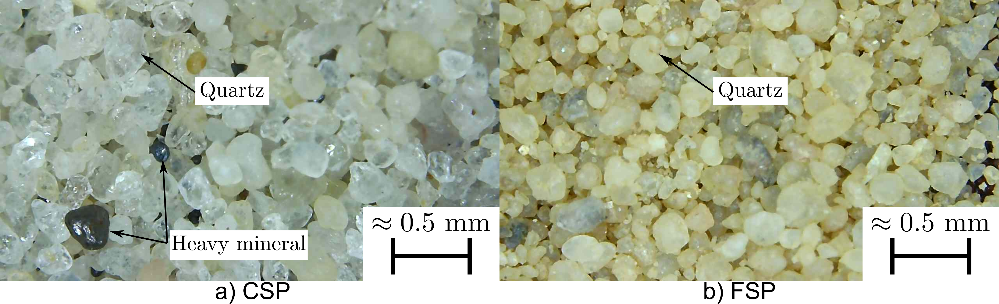
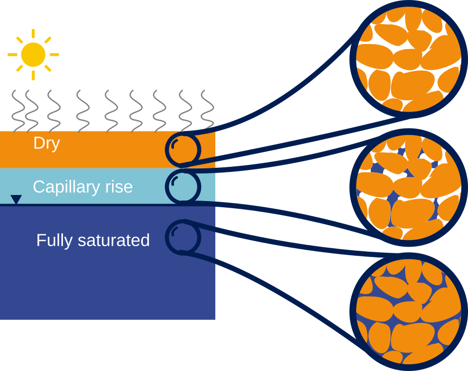
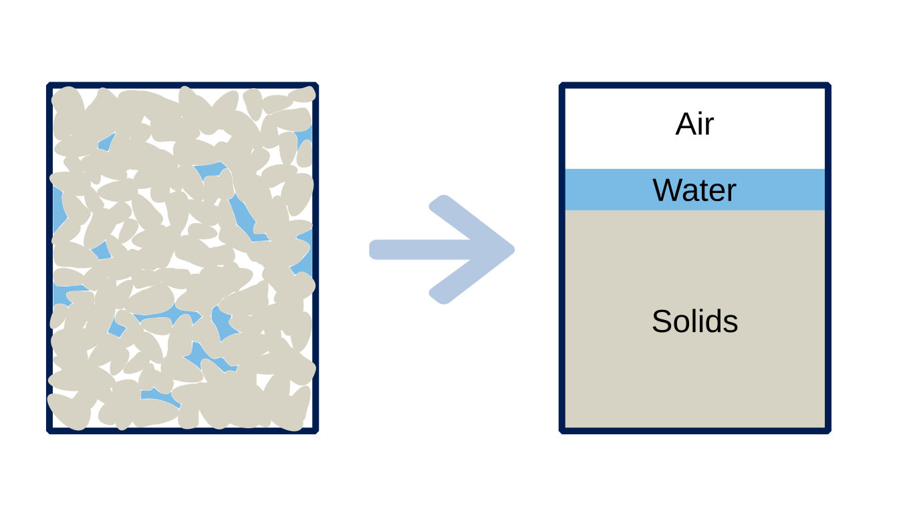
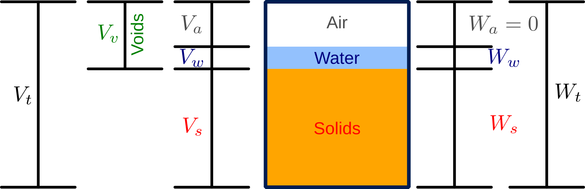

Luis Zambrano-Cruzatty, Ph.D.
Fall 2026
Objectives covered in this lecture
After this lecture we will be able to:
| Dimension | SI | Imperial | Conversion factor |
|---|---|---|---|
| Length | cm/m | in/ft | 0.394/3.281 |
| Mass | kg | slug | 0.0685 |
| Force | N | lb | 0.225 |
| Gravity | 9.81 m/\(\text{s}^2\) | 32.17 ft/\(\text{s}^2\) | - |
| Unit weight of water | 9.81 kN/\(\text{m}^3\) | 62.4 pcf | - |
| Variable | Definition | Formula |
|---|---|---|
| Density (\(\rho\)) | Ratio of mass (\(m\)) to the volume (\(V\)) it occupies. | \(\rho=m/V\) |
| Unit weight (\(\gamma\)) | Ratio of weight (\(W\)) to volume (\(V\)) it occupies. | \(\gamma=W/V\) |
| Specific gravity (\(G_s\)) | Ratio of density of solid (\(\rho\)) to the density of water (\(\rho_w\)). | \(G_s=\rho/\rho_w\) |
| Mineral | Formula | \(G_s\) |
|---|---|---|
| Calcite | CaCO\(_3\) | 2.71 |
| Feldspar | - | 2.6 |
| Hematite | Fe\(_2\)O\(_3\) | 5.2 |
| Kaolinite | Al\(_2\)Si\(_2\)O\(_5\)(OH)\(_4\) | 2.61-2.66 |
| Mica | - | 2.9 |
| Quartz | SiO\(_2\) | 2.65 |



VOLUME
WEIGHT

| Variable | Definition | Equation |
|---|---|---|
| Gravimetric water content \(w\) | Ratio of the weight of water to the weight of solids | \( w[\%]= \frac{W_w}{W_s} \times 100 \) |
| Volumetric water content \(\Theta\) | Ratio of the volume of water to the total volume | \( \Theta=\frac{V_w}{V_t} \) |
| Saturation ratio\(S_r\) | Ratio of the volume of water to the volume of voids | \( S_r=\frac{V_w}{V_v} \) |
| Variable | Definition | Equation |
|---|---|---|
| Void ratio \(e\) | Ratio of volume of voids to volume of solids | \( e=V_v/V_s \) |
| Porosity \(n\) | Ratio of volume of voids to total volume | \( n= V_v/V_t \) |
| Solid fraction \(c\) | Ratio of volume of solids to total volume | \( c= V_s/V_t \) |
| Variable | Definition | Unit weight | Density |
|---|---|---|---|
| Total unit weight/density (\(\gamma_t\))/ (\(\rho_t\)) | Ratio of total weight/mass to total volume | \( \gamma_t=W_t/V_t \) | \(\rho_t= m_t/V_t \) |
| Dry unit weight/density (\(\gamma_d\))/ (\(\rho_d\)) | Ratio of weight/mass of solids to total volume | \( \gamma_d=W_s/V_t \) | \(\rho_d= m_s/V_t \) |
| Saturated unit weight/density (\(\gamma_{sat}\))/ (\(\rho_{sat}\)) | Unit weight/density when \(S=100\%\) or \(V_v=V_w\) | \( \gamma_{sat}=W_{sat}/V_t \) | \(\rho_{sat}= m_{sat}/V_t \) |
| Buoyant unit weight/density (\(\gamma'\))/ (\(\rho'\)) | Also known as submerged or effective unit weight/density | \( \gamma'=\gamma_{sat}-\gamma_w \) | \(\rho'=\rho_{sat}-\rho_w \) |
| Soil type | \(\gamma_{sat}\) | \(\gamma_d\) | \(\gamma'\) | |||
|---|---|---|---|---|---|---|
| kN/m3 | pcf | kN/m3 | pcf | kN/m3 | pcf | |
| Sands and gravels | 19-24 | 119-150 | 15-23 | 94-144 | 9-14 | 62-81 |
| Silts and clay | 14-21 | 87-131 | 6-18 | 37-112 | 4-11 | 25-69 |
| Glacial tills | 21-24 | 131-150 | 17-23 | 106-144 | 11-14 | 69-87 |
| Crushed rock | 19-22 | 119-137 | 15-20 | 94-125 | 9-12 | 56-75 |
| Peats | 10-11 | 60-69 | 1-3 | 6-19 | 0-1 | 0-6 |
| Organics silt and clay | 13-18 | 81-112 | 5-15 | 31-94 | 3-8 | 19-50 |
For unit weight:
\(\gamma_t=\cfrac{\gamma_w (G_s+S e)}{1+e} \)
\(\gamma_d=\cfrac{\gamma_w G_s}{1+e} \)
\(\gamma_{sat}=\cfrac{\gamma_w (G_s+ e)}{1+e} \)
\( \gamma_t=\gamma_d (1+w[-])\)
Relationship between saturation, void ratio, specific gravity, and water content:
In the natural state, a moist soil has a volume of 0.0093 m3 and weighs 177.6 N. The oven dry weight of the soil is 153.6 N. If \(G_s=2.71\), calculate: (1) Gravimetric water content, (2) Total unit weight, (3) Void ratio and porosity, (4) Saturation ratio.